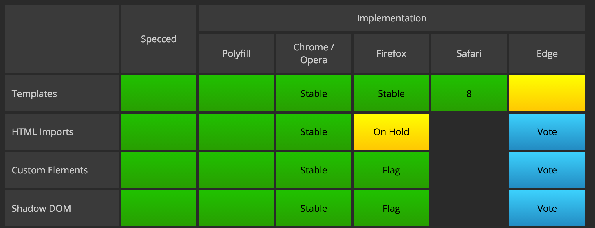

Custom Elements
Using them today
Created by Mike Macaulay / @mmacaula
Who Am I?
- Java for about 8 years out in Denver
- Moved to Omaha 3 years ago
- Web / Javascript developer ever since
Who I work for
Agenda
- What are custom elements?
- Some examples on using them
- Can we really use them today?
Custom Elements
First need to understand what Web Components are
Web Components
Actually 4 different specs
- Custom Elements
- Templates
- Shadow DOM
- HTML Imports
We'll be focusing on Custom Elements
Custom Elements
Let's get to the good stuff
What can just Custom Elements do anyway?
Allow you to
- Add behavior to elements
- Reuse across frameworks
- Increase readability
Let's find out how to create and use them
Creating Custom Elements
- Shim
- Register
- Use
Shim
Register
var proto = Object.create(HTMLElement.prototype);
proto.attachedCallback = function() {
console.log("I have been attached to the DOM: ", this);
};
document.registerElement('my-element', {
prototype: proto
});
Use
$('body').append('More methods
proto.detachedCallback = function(){
// called when element removed from the DOM, this is the element
}
proto.attributeChangedCallback = function(attrName, oldVal, newVal){
// called when any attribute on the element changes
}
Even More methods
We can attach any methods we want!
proto.hide = function(){
this.style.display = 'none';
}
document.querySelector('my-element').hide(); // hide the element
// or
$('my-element')[0].hide();
Cool
But how can I use these
Give me some ideas
Example #1
Anyone ever work with dropdowns?
Dropdown
Live Example!
I forgot to initialize
$('.dropdown').dropdown();
Not too bad
If you're creating static pages
But what about dynamic ones?
A simple custom element
Defining
var proto = Object.create(HTMLElement.prototype);
proto.attachedCallback = function(){
var $el = $(this);
$el.addClass('ui dropdown');
$el.dropdown();
};
proto.toggle= function(){
$(this).dropdown('toggle');
};
document.registerElement('semantic-dropdown', {
prototype: proto
});
Using it
I'm a custom Dropdown!
Example #2
Time Element
Quiz time: Did anyone know such a thing existed??
The after-party starts at
But what if I want more?
- Auto updating 'time ago'
- I started this presentation
- Or Locale aware time
- 1 Apr vs Apr 1 depending on my browser settings
This is Github's Time Element extension library
Just a custom element with extra behavior (relative and local time)
To Use Time Element
< script src="js/time-elements.js">
< time is="relative-time"
datetime="2015-08-06T03:08:28.876Z">August 6th, 2015< / time>
Example #3
Let's go back to our dropdown
Semantic let's us register a callback anytime our dropdown changes
$('.dropdown')
.dropdown({
onChange: function(value, text, $selectedItem) {
// custom action
}
});
Can we improve this?
Would be nice if we got DOM events just like we do with select or input tags
proto.attachedCallback = function(){
var self = this;
$(self).addClass('ui dropdown').dropdown({
onChange : function(value, text, $selectedItem){
triggerEvent($selectedItem[0],'selected');
}
});
};
return document.registerElement('semantic-dropdown', {
prototype: proto
});
Trigger Event
var triggerEvent = function(element, name){
var event = document.createEvent('Event');
event.initEvent(name, true, true); //can bubble, and is cancellable
element.dispatchEvent(event);
};
Improved Dropdown
Almost don't need to know it's there
And that is a good thing!
Uses of Custom Elements
- jQuery Plugin Initialization
- Small fully contained components
- Library events to DOM events
- Layout / Panel Management
- Whatever you can think of
Will they change everything?
No, but that's ok
When should you use them?
It depends
When you have a need to
Prime candidates are shared components in your organization
Should you use them?
Yes!
Wait a sec...
Webcomponents aren't ready for production
Web Components Browser impementation
Why?
It's been years since these were announced
The specs are out there, why aren't the browsers implementing them?
Not Invented Here?
Google has been primary pusher of web components
Perhaps too primary
Problems with Web Components today
We've got a set of polyfills out there (Polymer)
Still, widely considered "not ready" for production
Why not?
Size and Complexity of the polyfills
Particularly with Shadow DOM
But the good news!
Custom Elements are not shadow DOM
Much easier to polyfill!
Polyfills
You have two choices
- Webcomponents.org
- Document-Register-Element
Comparison
| Polyfill | Size | Compatibility |
|---|---|---|
| Webcomponents.js | 5.1KB | IE10+, Current Browsers, |
| Document-Register-Element | 3KB | IE8+, Safari, tons of mobile browsers |
Custom Elements
A tool for your developer toolbox
An overlooked one IMO
That's all for me!
Questions?